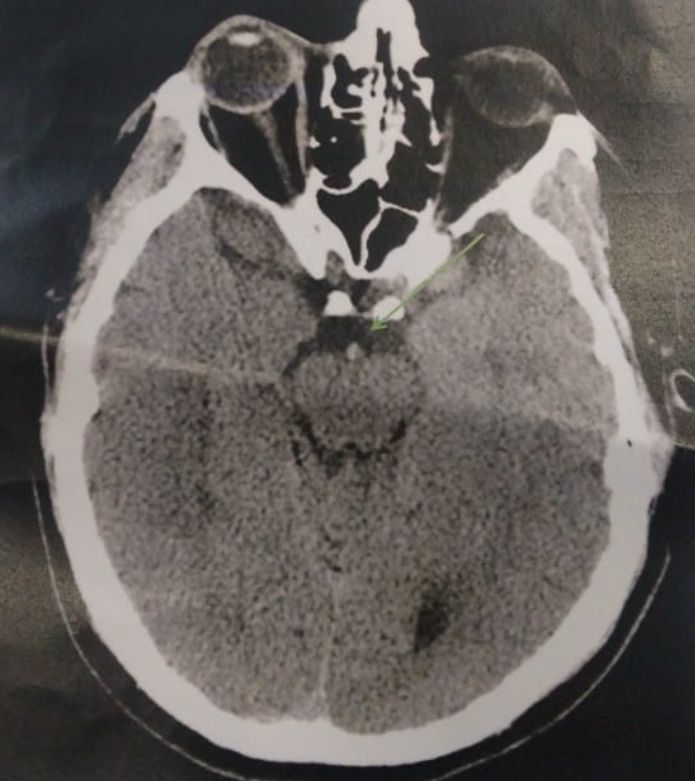

Epreuve pratique 2024
Cas Clinique 1
Un patient de 58 ans est admis en salle d’urgence devant un trouble de la conscience. Aucun témoin n’a assisté à l’évènement. Les antécédents du patient incluent un remplacement mécanique de valve mitrale en 2018, une insuffisance cardiaque de type 2, une hypertension artérielle, une fibrillation auriculaire chronique et un diabète de type 2 insulino-requérant.
Son traitement habituel comporte de la coumadine 5mg/jour, du ramipril 5mg/jour, du bisoprolol 2,5mg/j, de l’insuline lente 10UI - 0UI - 10UI et de la Metformine 1gx2.jour.
Sa réponse motrice à la stimulation nociceptive est en flexion sans signe de retrait, il ne présente pas de réponse verbale ni oculaire. Les pupilles sont intermédiaires et réactives.
📝 Questions
Question 1
Quels examens initiaux devez vous prescrire afin d’évaluer ce patient en état comateux?
Question 2

Ce patient est un traumatisé crânien. Quels sont les déterminants de l'apport en oxygène au cerveau ? Donner la formule du contenu artériel en oxygène ? Comment réduire la consommation en oxygène du cerveau..
img
Question 3
Calculez le score de Glasgow du patient. Quelle est la conduite à tenir en urgence pour ce patient?
Question 4
Dans les suites de votre prise en charge, vous effectuez un gaz du sang et vous retrouvez: pH: 7,34, HCO3- : 12 mmol/L, PCO2 : 22mmhg, PO2 : 90 mmHg (sous 30% FiO2) Na+: 145mmol/L, K+ : 4mmol/L, Cl-: 95mmol/L.
Definissez l’equilibre acido-basique de ce patient. Quelles étiologies évoquez-vous à partir de ce gaz du sang?
Question 5
Cinq jours après son admission, le patient est en réanimation sous ventilation mécanique. l’infirmière vous appelle pour une hypotension artérielle à 80/45mmHg sans réponse efficace au remplissage rapide de 500ml de NaCl 0,9%. La température est à 38,8°C, la fréquence cardiaque est à 130 bpm. Le patient est marbré et frissonne. L’abdomen et la nuque sont souples. Il est perfusée par un cathéter veineux central en fémoral gauche. Les leucocytes sont à 18 000/mm3, les plaquettes sont à 120 000/mm3. Le bilan hépato-cellulaire et la fonction rénale sont normaux.
Quelle est votre hypothèse diagnostique la plus probable? Quelles étiologies sont à évoquer devant ce tableau?
Question 6
Quelle est votre prise en charge en urgence?
Question 7
Le 10e jour de votre prise en charge, le patient est sous antibiothérapie adaptée (la culture du cathéter veineux central fémoral gauche est revenue positive à 10^4 cfu/ml de S.aureus Méticilline-Sensible). Le patient se dégrade de nouveaux avec des frissons et des marbrures. Des hémocultures périphériques ont été prélevées et reviennent positives en moins de 12 heures à cocci gram positif.
Quelles sont les deux diagnostics les plus probables à évoquer? Quels sont les 2 examens complémentaires que vous proposez dans cette situation?
Question 8
Malgré vos traitements, le patient évolue vers un état végétatif. Après discussions avec la famille, une limitation et arrêt des traitements actifs (LATA) est à envisager.
Quel est le cadre légal de cette décision de limitation et arrêt des traitements actifs (LATA)?
Cas Clinique 2
Vous êtes de garde dans une maternité de niveau trois et prenez en charge à 36 SA Madame X, 3ème geste, 2ème pare. La consultation d’anesthésie réalisée en début du 3ème mois note : un antécédent de Guillain Barré il y a 10 ans sans séquelle, une taille de 1,60m, un poids de 80 kg au début de grossesse et de 95 kg à la consultation, un Mallampati II et aucun autre critère d’intubation difficile, aucun critère de ventilation difficile, un examen du dos sans particularité, une auscultation cardiopulmonaire normale. L’examen biologique fait lors de cette consultation : TP (100%) TCA(1,25) lié à un déficit en facteur XI dont le taux est à 60%, hémoglobine(10,5 g/dL, plaquettes 200 000 /mm3, créatininémie 65 µg/ml, clairance 115 ml/min/m2.
Elle vient pour une fièvre à 39°C avec des douleurs lombaires gauche. L’état cardiovasculaire est stable et l’examen gyneco-obstétrical normal. La numération formule sanguine met en évidence par rapport à la précédente une augmentation des leucocytes à 18 000 /mm3 et le ionogramme sanguin est normal ainsi que la fonction rénale, le facteur XI est toujours à 60%. L’échographie met en évidence une dilatation pyélocalicielle gauche.
📝 Questions
Question 1
Quel diagnostic évoquez-vous ?
Question 2
Décrivez le traitement qui sera entrepris.
Trois jours plus tard la patiente entre en travail (dilatation 4 cm), elle est apyrétique et le bilan biologique est identique à celui du début du 3ème trimestre.
Question 3
Quelle(s) analgésie(s) lui proposez vous ?
Question 4
Alors que la patiente n’a pas encore d’analgésie, elle présente une altération sévère du rythme cardiaque fœtal faisant poser l’indication d’une césarienne code rouge. Vous décidez de réaliser une anesthésie générale.
Décrivez votre prise en charge avant l’incision.
Question 5
Après l’induction, l’anesthésiste n’arrive pas à intuber la patiente après une laryngoscopie directe avec et sans mandrin et une tentative avec le vidéo-laryngoscope avec et sans mandrin. Donnez votre conduite à tenir devant cette difficulté.
Question 6
Vous décidez de faire un bloc de paroi bilatéral pour l’analgésie avec un anesthésique local lévogyre.
a) Quel est le nom de ce bloc ?
b) Quel est le site d’injection ?
c) Citez le ou les anesthésiques qui pourrai(ent) être utilisé(s).
🚀 Rejoignez notre formation complète
Cette annale fait partie de notre programme de formation. Découvrez notre préparation intensive avec corrections détaillées pour maximiser vos chances de réussite aux EVC.
Découvrir la formation Khypnos